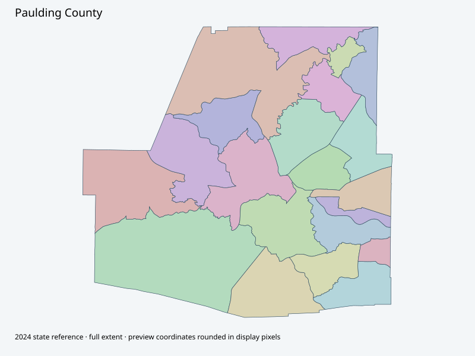

Map index · 21 explicit-FIPS 2024 map rows; 21 historical result identities. No approved crosswalk.

Full native coordinate/attribute extraction (gzip JSON) · Original complete statewide ZIP
Official GIS page -> actual election webmap -> Voting Precincts layer; complete20-feature native geometry recovered on bounded retry after transient timeout. Legacy PDF11968 returned404. Current publication does not establish November reporting approval/crosswalk.
Full objects, county source IDs/clocks and attributes: all 2,701 native contexts. isVirtual:false and source label precinct do not prove physical geometry.
| Source name | Full source GUID | Breakdown ordinal | Source | Map status |
|---|---|---|---|---|
| Burnt Hickory Park | 01000000-d884-2e72-afcc-08dcda4be3dc | 0 | 2024NovGen--paulding-county-ga | unreviewed / no approved map join |
| Crossroads Library | 01000000-d884-2e72-d865-08dcda4be3eb | 1 | 2024NovGen--paulding-county-ga | unreviewed / no approved map join |
| Shelton Elementary | 01000000-d884-2e72-4eef-08dcda4be3fa | 2 | 2024NovGen--paulding-county-ga | unreviewed / no approved map join |
| Russom Elementary | 01000000-d884-2e72-c7a7-08dcda4be408 | 3 | 2024NovGen--paulding-county-ga | unreviewed / no approved map join |
| North Industrial | 01000000-d884-2e72-2404-08dcda4be417 | 4 | 2024NovGen--paulding-county-ga | unreviewed / no approved map join |
| Legacy Baptist Church | 01000000-d884-2e72-142e-08dcda4be427 | 5 | 2024NovGen--paulding-county-ga | unreviewed / no approved map join |
| Watson Govt Complex | 01000000-d884-2e72-b413-08dcda4be435 | 6 | 2024NovGen--paulding-county-ga | unreviewed / no approved map join |
| E Paulding Middle School | 01000000-d884-2e72-af3d-08dcda4be444 | 7 | 2024NovGen--paulding-county-ga | unreviewed / no approved map join |
| The Events Place | 01000000-d884-2e72-472a-08dcda4be453 | 8 | 2024NovGen--paulding-county-ga | unreviewed / no approved map join |
| Poplar Springs Baptist | 01000000-d884-2e72-a878-08dcda4be461 | 9 | 2024NovGen--paulding-county-ga | unreviewed / no approved map join |
| Dianne Wright Innovation Center | 01000000-d884-2e72-2d12-08dcda4be470 | 10 | 2024NovGen--paulding-county-ga | unreviewed / no approved map join |
| Taylor Farm Park | 01000000-d884-2e72-f4d5-08dcda4be47e | 11 | 2024NovGen--paulding-county-ga | unreviewed / no approved map join |
| S Paulding Middle School | 01000000-d884-2e72-b4fd-08dcda4be48d | 12 | 2024NovGen--paulding-county-ga | unreviewed / no approved map join |
| White Oak Park | 01000000-d884-2e72-3959-08dcda4be49d | 13 | 2024NovGen--paulding-county-ga | unreviewed / no approved map join |
| Carl Scoggins Middle School | 01000000-d884-2e72-708b-08dcda4be4ac | 14 | 2024NovGen--paulding-county-ga | unreviewed / no approved map join |
| Yorkville Baptist Church | 01000000-d884-2e72-ef09-08dcda4be4bc | 15 | 2024NovGen--paulding-county-ga | unreviewed / no approved map join |
| Airport | 01000000-d884-2e72-88ca-08dcda4be4cb | 16 | 2024NovGen--paulding-county-ga | unreviewed / no approved map join |
| Dobbins Middle School | 01000000-d884-2e72-227e-08dcda4be4da | 17 | 2024NovGen--paulding-county-ga | unreviewed / no approved map join |
| Activation Church | 01000000-d884-2e72-6a9e-08dcda4be4e8 | 18 | 2024NovGen--paulding-county-ga | unreviewed / no approved map join |
| High Shoals Baptist Church | 01000000-d884-2e72-072d-08dcda4be4f7 | 19 | 2024NovGen--paulding-county-ga | unreviewed / no approved map join |
| Tabernacle Baptist Church | 01000000-d884-2e72-d86b-08dcda4be505 | 20 | 2024NovGen--paulding-county-ga | unreviewed / no approved map join |
| Original row ordinal | DISTRICT | PRECINCT_I | PRECINCT_N |
|---|---|---|---|
| 1194 | 2230016C | 0016C | YORKVILLE BAPTIST CHURCH |
| 1195 | 2230015C | 0015C | CARL SCOGGINS MIDDLE SCHOOL |
| 1196 | 2230017C | 0017C | PAULDING COUNTY AIRPORT |
| 1316 | 2230013B | 0013B | SOUTH PAULDING MIDDLE SCHOOL |
| 1332 | 2230018C | 0018C | DOBBINS MIDDLE SCHOOL |
| 1340 | 2230007B | 0007B | WATSON GOVERNMENT COMPLEX |
| 1341 | 2230014B | 0014B | WHITE OAK PARK |
| 1342 | 2230020B | 0020B | HIGH SHOALS BAPTIST CHURCH |
| 1343 | 2230001B | 0001B | BURNT HICKORY PARK |
| 1344 | 2230005C | 0005C | PAULDING SENIOR CENTER |
| 1345 | 2230019C | 0019C | ACTIVATION CHURCH |
| 1346 | 2230011C | 0011C | DIANNE WRIGHT INNOVATION CENTER |
| 1347 | 2230010B | 0010B | POPLAR SPRINGS BAPTIST CHURCH |
| 1348 | 2230012C | 0012C | TAYLOR FARM PARK |
| 1349 | 2230006B | 0006B | LEGACY BAPTIST CHURCH |
| 1350 | 2230009B | 0009B | THE EVENT'S PLACE |
| 1351 | 2230021B | 0021B | TABERNACLE BAPTIST CHURCH |
| 1360 | 2230008C | 0008C | EAST PAULDING MIDDLE SCHOOL |
| 1361 | 2230003C | 0003C | SHELTON ELEMENTARY SCHOOL |
| 1362 | 2230002C | 0002C | CROSSROADS LIBRARY |
| 1363 | 2230004C | 0004C | RUSSOM ELEMENTARY SCHOOL |